Junta numa lista só tudo o que foi achado em 23/10/2026, que estava em três lugares:
relatorios/testes-guiados/2026-10-23-sessao-0/sessao-0.md.relatorios/testes-guiados/mapa-do-programa/mapa.md (ramo mapa-do-programa-2026-10-23).relatorios/testes-guiados/livros/resumo.md e um .md por livro (ramo testes-livros-2026-10-23).Cada problema aparece uma vez só, mesmo quando foi achado por mais de um. A coluna "Quem achou" diz de onde veio (Samuel 0-x / mapa nº x / livros: código da linha no relatório do livro). Está organizada pelo que importa para quem vai usar o programa: primeiro os botões, depois as ferramentas, as funções que faltam, a imagem final e, por último, os nomes e números. Nada foi inventado: só o que está nos três documentos. Nenhuma linha do programa mudou.
Gravidade: trava o trabalho (não dá para terminar o livro como precisa) · atrapalha (o livro sai com defeito ou o Kaique se perde) · detalhe.
Livros (códigos): B = Boécio · P = Palatino · R = Righetti · S = Siebmacher · PE = Pesel · M = Matemática · L = ljs47 · V = Valadés · E = Escola de Jesus · C = Cursus · MA = Marial · H = Livro de Horas · G = Graduale · A = Antiphon_25. "La vida eterna" é o livro da sessão 0 e do mapa.
SEGURANÇA — ler primeiro
"imprimir agora" manda o livro inteiro para a impressora sem perguntar nada (item 5.1). Na tela "Ficou pronto!", um clique nesse botão manda o PDF direto para a impressora padrão do Windows: sem escolher impressora, sem número de cópias, sem "tem certeza?". No La vida eterna seriam 360 páginas de uma vez. Até ser mudado: não clicar em "imprimir agora"; usar "montar para imprimir em A4" ou abrir o PDF e imprimir pelo leitor. (O mapa não testou o botão, de propósito.)
Pedido do Samuel em 24/10 ("a questão dos avisos que quando clica não aparece como resolver e essas questões dos avisos que eu tinha falado?"), resposta "oK" em 26/10. Os problemas de aviso estavam espalhados pelas seções 1 e 5; aqui ficam juntos. Não são itens novos: cada um continua na sua seção, com a explicação completa e os prints.
| Nº | O que acontece com o aviso | Gravidade | Quem achou |
|---|---|---|---|
| 1.1 | Clicar "está certo" no aviso não muda nada na tela — parece que o clique não pegou | atrapalha | Samuel 0-3 · mapa |
| 1.2 | O aviso oferece "usar mais fraco", e o botão não faz nada | atrapalha | livros |
| 1.6 | Depois de desfazer, o aviso não volta (ou volta um a mais) | atrapalha | livros |
| 1.8 | O cartão do aviso no "Para revisar" não tem botão; no "Dividir a folha" não há como resolver o aviso | atrapalha | Samuel 0-7 e 0-8 |
| 5.5 | Três lugares contam as dúvidas, cada um dá um número, e os avisos de folha ficam escondidos (Escola: rodapé "1", no fim 166) | atrapalha | mapa · livros |
| 5.7 | Avisos demais e avisos falsos (Siebmacher: 128 de 134 páginas com aviso; 3 avisos numa folha branca) | atrapalha | livros |
| 5.9 | O aviso fala de "força do preto" em página feita com Mágico pro ou Melhorar, onde isso não existe | atrapalha | livros |
| Seção | Itens | Trava o trabalho | Atrapalha | Detalhe |
|---|---|---|---|---|
| 1. Botões que não funcionam ou não dão resposta | 13 | 0 | 8 | 5 |
| 2. Ferramentas que somem ou ficam escondidas | 7 | 1 | 4 | 2 |
| 3. Funções que faltam | 2 | 1 | 1 | 0 |
| 4. Defeitos na imagem final | 12 | 0 | 10 | 2 |
| 5. Nomes, textos e números que confundem | 16 | 1 | 10 | 5 |
| Total | 50 | 3 | 33 | 14 |
O "imprimir agora" (5.1) está contado como "trava o trabalho" por ser de segurança.
| Nº | Problema | Gravidade | Quem achou | Onde aparece |
|---|---|---|---|---|
| 1.1 | "está certo" não muda nada na tela | atrapalha | Samuel 0-3 · mapa nº 7 e 8 | La vida eterna, folha 1, "Dividir a folha" |
| 1.2 | "usar mais fraco" não faz nada | atrapalha | livros: E-2, H-3 (problema 10) | E p. 1; H p. 4 |
| 1.3 | O desfazer não tira a marcação do Retângulo | atrapalha | livros: P-2, R-6, S-5, PE-5, L-5, V-5, E-4, MA-3, H-6, G-4, A-1 (problema 2) | 11 livros: P 74, R 99, S 37, PE 51, L 52, V 41, E 19, MA 166, H 53, G 22, A 56 |
| 1.4 | "usar o corte alargado" deixou a página menor | atrapalha | livros: A-2 (problema 8) | A p. 2 |
| 1.5 | "Confirmar e processar" às vezes não abre nada (a conferir) | atrapalha | livros: "A conferir" (todos os 14) | os 14 livros, depois de muito uso da tela |
| 1.6 | O desfazer não traz o aviso de volta (ou traz um a mais) | atrapalha | livros: B-1, PE-3, B-4 (problemas 11 e 18) | B p. 2 e p. 1; PE p. 1 |
| 1.7 | O desfazer desfaz uma coisa que não está à vista | atrapalha | livros: R-5 (problema 15) | R folha 99 (desfez o giro das 135 folhas) |
| 1.8 | O cartão do aviso no "Para revisar" não tem botão, e no "Dividir a folha" não há como resolver o aviso | atrapalha | Samuel 0-7 e 0-8 | La vida eterna, páginas 2, 7 e 9 (folha 4) |
| 1.9 | O Retângulo novo não aparece na tela | detalhe | livros: P-3 (problema 18) | P p. 74 |
| 1.10 | Tab ("ir para a próxima dúvida") não andou (a conferir) | detalhe | mapa nº 14 | La vida eterna, folha 2 |
| 1.11 | Esc não fecha o "ver todas" | detalhe | mapa nº 13 | tela de conferir |
| 1.12 | Menus Editar, Marcar, Filtro, Página e Painéis cinza na tela das caixinhas | detalhe | mapa nº 19 | "Marque o que você quer fazer" |
| 1.13 | A tela fica vazia ou em "Preparando a prévia..." por uns segundos | detalhe | mapa nº 21 · livros: M-4 (problema 18) | La vida eterna (Endireitar, painel Filtro); M (Cortar) |
Clico em "está certo" e não acontece nada: a frase é a mesma, a folha é a mesma, a miniatura não ganha marca e o rodapé continua "0 de 360 conferidas". Só a barra de espaço marca e vai para a próxima.
Detalhe: o clique grava a folha como conferida, mas não mostra (ui/tela_conferir.py:666-670, _marcar_revisada
:5065-5070). No Dividir se confere folha e o rodapé conta página, por isso a contagem não mexe (mapa nº 8;
ver 5.4). Diferença entre os documentos: no Boécio (p. 15, página com aviso) o "está certo" funcionou e a
conta de dúvidas baixou. O que não dá resposta é o "está certo" no "Dividir a folha" (sessão 0 e mapa).
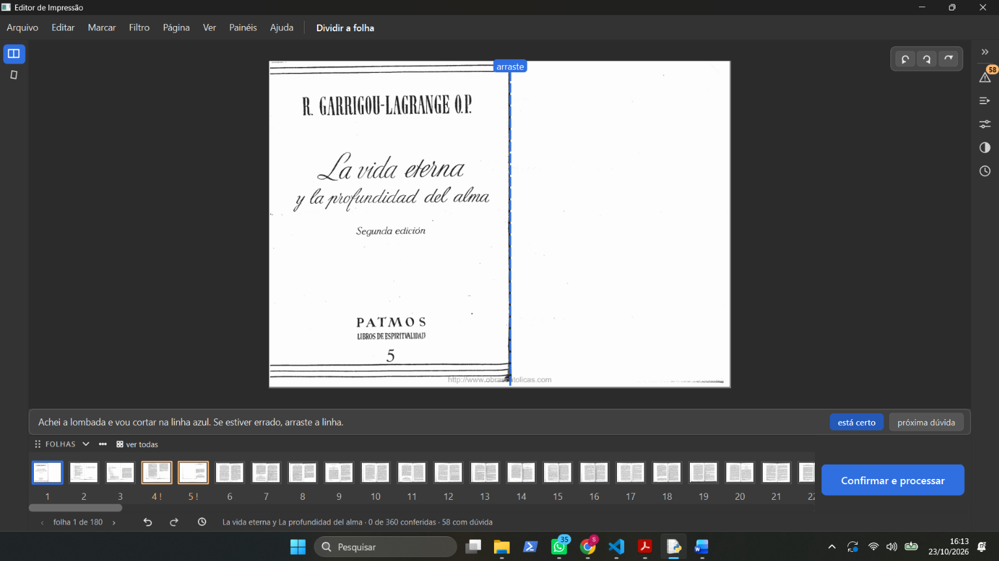
Na página com o aviso "Ficou muito escura. Tente mais fraco na força do preto", clico "usar mais fraco": a página não muda, o aviso fica na faixa, só o botão some, e a contagem de dúvidas fica igual (E: 2 → 2; H: 23 → 23).
Detalhe: aparece em páginas de Mágico pro (Escola) e Melhorar (Horas), e em quase toda página iluminada do Livro de Horas (as pinturas são escuras de propósito). O nome "força do preto" está errado nesses filtros: ver 5.9.
Print: não há (está no log.txt do livro).
Marco um retângulo com a ferramenta Retângulo, clico no desfazer de baixo, e a marcação continua lá, sem aviso. Em todos os 11 livros onde se marcou, o número de áreas foi N → N+1 → N+1 (ex.: Palatino 74, "Marcado: 4 de gravura" → 5 → 5).
Detalhe: a marca que ficou vai para o PDF (item 4.6).
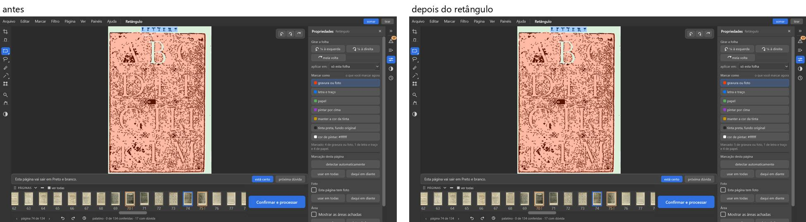
No aviso "O corte ... deixou de fora um pedaço impresso", o botão "usar o corte alargado" deveria pegar mais página. No Antiphon p. 2 fez o contrário: a página virou uma tira estreita e perdeu a metade esquerda.
Detalhe: recorte de 40 % → 92 % da largura (do meio para a direita). No Righetti, Matemática, Marial e Graduale o mesmo botão tirou a dúvida sem estragar.
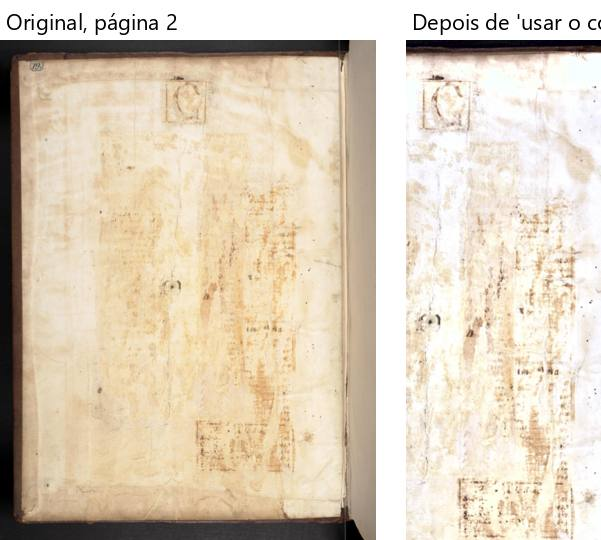
Nos 14 livros, depois de muito uso da tela de conferir, o clique no botão azul "Confirmar e processar" não abriu nada em 30 s (botão à vista, ligado, nada por cima). Num percurso curto (abrir, conferir e clicar logo) abriu na hora, três vezes.
Detalhe: o clique pelo próprio Qt abriu sempre. O relatório dos livros não contou como problema: pode ser do jeito de pilotar a janela. Pedido: o Samuel reparar se o botão às vezes precisa de um segundo clique.
Print: não há.
Mexo numa página que tinha aviso e desfaço: a página volta, mas o aviso some e a dúvida sai da lista sem eu ter resolvido nada (B p. 2 no Endireitar: 15 → 14 dúvidas e a miniatura perde o "!"; PE p. 1 no "usar mais escuro": 37 → 36 → 36). No caminho contrário, na B p. 1, desfazer o "usar Mágico pro nesta" trouxe um aviso a mais que não existia ("Texto quase sumiu", "aviso 1 de 2").
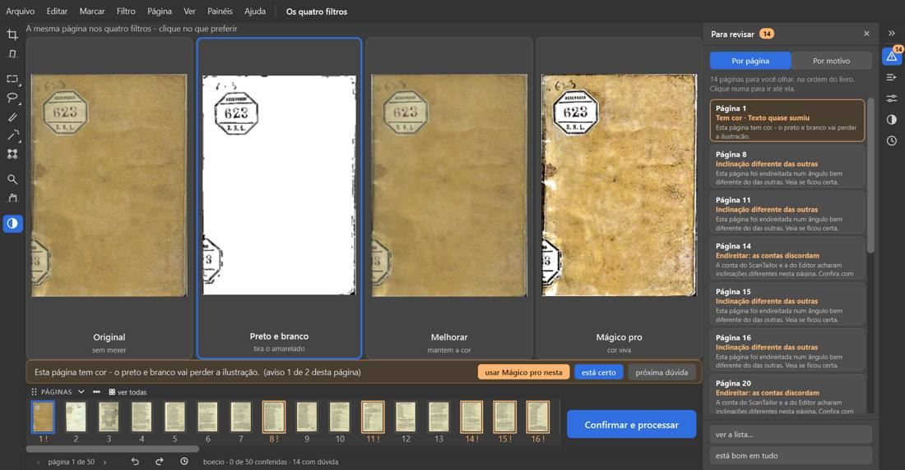
No Righetti, arrastei a linha de dividir numa folha que não divide (não mexeu nada) e cliquei no desfazer achando que desfazia o arrasto. O desfazer desfez o giro das 135 folhas (a última coisa feita de verdade), sem aviso, e o PDF saiu todo de lado.
Detalhe: o desfazer faz o que promete (desfaz a última ação), mas para o Kaique é uma armadilha (log.txt: corte 0,5
→ 0,5; giro 270 → 0).
Print: não há.
No painel "Para revisar" há avisos ("Parece em branco", páginas 2, 7 e 9), mas não há botão para resolver nem dica de como fazer o aviso sumir. Clicando no cartão da página 7, o programa foi para a folha 4, mas a faixa continuou com "Achei a lombada..." e sem os botões do aviso.
Detalhe: clicar no cartão leva até a página; os botões ("Deixar em branco", "Tirar do livro", "está bom assim")
aparecem na faixa embaixo da página — mas não na ferramenta "Dividir a folha" (core/analise.py 140-152,
ui/tela_conferir.py 500-510). No pé do painel há "está bom em tudo". Nada no cartão diz isso. Conferir na sessão 1.
Numa página que o programa já marcou quase inteira como gravura (em salmão), o retângulo que eu marco some dentro do salmão; só o número "Marcado: 5 de gravura" mostra que houve algo. Print: o mesmo do 1.3.
A tecla Tab ("Ir para a próxima dúvida") não andou no teste do mapa (ficou na folha 2). Pode ser o lugar do foco; conferir com o Samuel. Print: não há.
Na grade "ver todas" da tela de conferir, o Esc não volta; só o botão "voltar ao trabalho".

Na tela "Marque o que você quer fazer" os menus do alto aparecem, mas Editar, Marcar, Filtro, Página e Painéis ficam cinza (não abrem). Print: o do 5.11 (os menus cinza no alto).
O painel "Filtro da página" abriu na primeira vez com os quatro quadradinhos dos filtros vazios (cinza); no Endireitar, e no Cortar do livro de fotos (Matemática), a página mostrou só "Preparando a prévia..." por alguns segundos. Print: não há.
| Nº | Problema | Gravidade | Quem achou | Onde aparece |
|---|---|---|---|---|
| 2.1 | Cortar, dividir e as outras ferramentas somem conforme as caixinhas, sem aviso | atrapalha | Samuel 0-4 e 0-9 · mapa nº 3 e 11 · mapa resposta (b) | La vida eterna (só 2 ícones na coluna da esquerda) |
| 2.2 | Caixinha marcada aparece só como um tique, sem quadrado: fácil desmarcar sem querer | atrapalha | mapa nº 3 · Samuel 0-4 (causa provável) | "Marque o que você quer fazer" |
| 2.3 | Os painéis da direita começam fechados e a coluna da esquerda não tem nomes | atrapalha | Samuel 0-4 · mapa nº 11 | tela de conferir |
| 2.4 | O "automático" não é um botão | atrapalha | Samuel 0-6 · mapa nº 1 · mapa resposta (a) | tela inicial ("Rodar o automático...") e painel "Automático" |
| 2.5 | Mudar as caixinhas depois de conferir não vale (defeito de 29/09) | trava o trabalho | mapa nº 2 · Samuel 0-9 (resposta do mapa) · livros: R-3 | La vida eterna; R (Conferir de novo não dividiu) |
| 2.6 | A Luz some no filtro Original; a "Área" fica no fim do painel Propriedades | detalhe | mapa nº 18 | painel "Filtro da página" > "Mais ajustes"; painel Propriedades |
| 2.7 | "Margens iguais" e "Montar cadernos" só aparecem rolando | detalhe | mapa (parte 2) · livros: L-3 | "Marque o que você quer fazer" |
"Tá, eu quero cortar as folhas e agora como eu faço??" — a ferramenta de cortar não está na coluna da esquerda. Só aparecem as ferramentas das caixinhas marcadas na primeira tela, e nada na tela diz isso.
Detalhe: "Dividir folhas ao meio" liga o Dividir; "Cortar as bordas" liga o Cortar; "Endireitar folhas tortas" liga o Endireitar; "Limpar a folha" liga Retângulo, Laço, Pincel, Varinha, Mover a área, Zoom, Mão e "Os quatro filtros" — desmarcada, todas somem. O caminho para voltar (Arquivo > "Voltar para as opções") não vale num livro já conferido (2.5).
Diferença entre os documentos: a sessão 0 diz que o Samuel marcou "Dividir" e "Limpar a folha"; o mapa reproduziu e concluiu que o print dele (2 ícones: Dividir e Endireitar; rodapé "58 com dúvida") bate com Dividir + Endireitar, com "Limpar a folha" e "Cortar" desmarcadas — com Dividir + Limpar apareceriam 9 ícones. A própria sessão 0, em "Respostas do mapa", já aceita a versão do mapa. Causa provável: item 2.2.

Na primeira tela, a caixinha marcada aparece só como um tique, sem quadrado; a desmarcada tem quadrado vazio. Parece que as marcadas "não têm caixa". De fábrica, "Limpar a folha", "Endireitar" e "Cortar as bordas" já vêm marcadas: quem clica nelas achando que marca, desmarca — e somem as ferramentas (2.1).
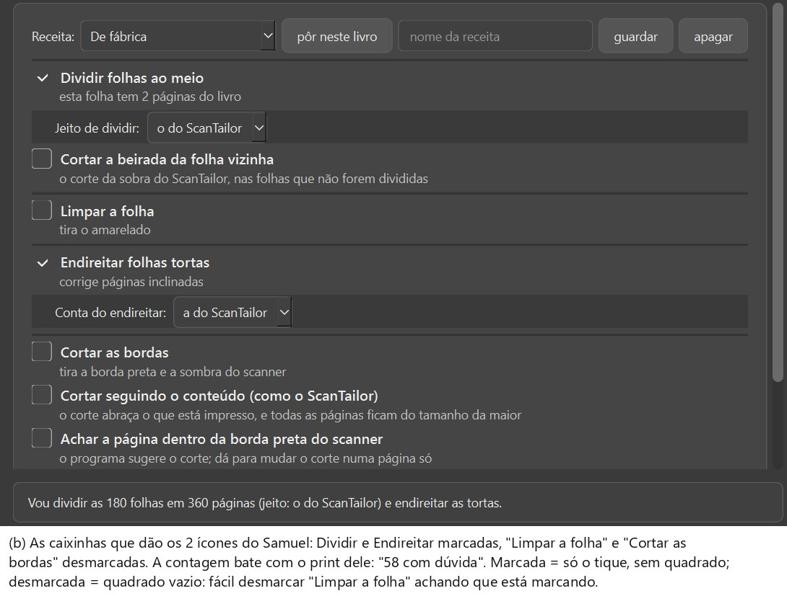
"As opções do lado sumiram": os painéis (Para revisar, Automático, Propriedades, Filtro da página, Histórico) moram na coluna de ícones da direita e começam todos fechados ao abrir um livro; nada diz que estão lá. Na coluna da esquerda não há palavras: o nome da ferramenta só aparece com o mouse parado em cima.
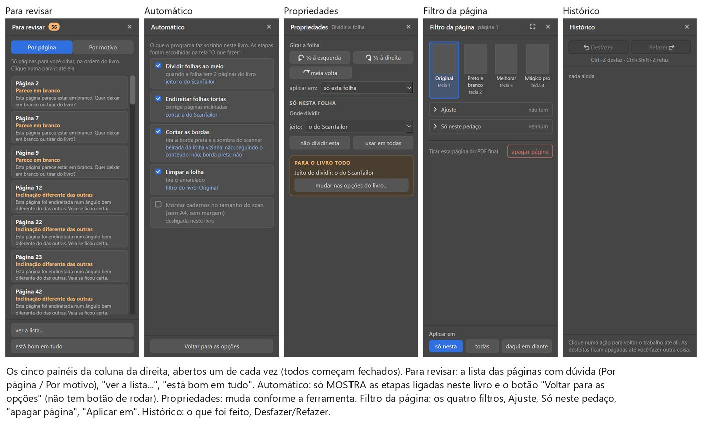
"Não consegui nem achar o modo automático." Não existe botão que rode o automático. O programa trabalha sozinho quando se clica "Conferir" na tela "Marque o que você quer fazer".
Detalhe: há três "automáticos" e nenhum roda nada — "Rodar o automático..." (tela inicial, livro aberto) só leva à
tela das caixinhas; o painel "Automático" (2º ícone da direita) só mostra as etapas ligadas; "Jeito do preto e branco:
Automático" é outra coisa, dentro de "Mais ajustes" (PainelAutomatico em ui/widgets/paineis.py;
ui/tela_inicio.py:687).
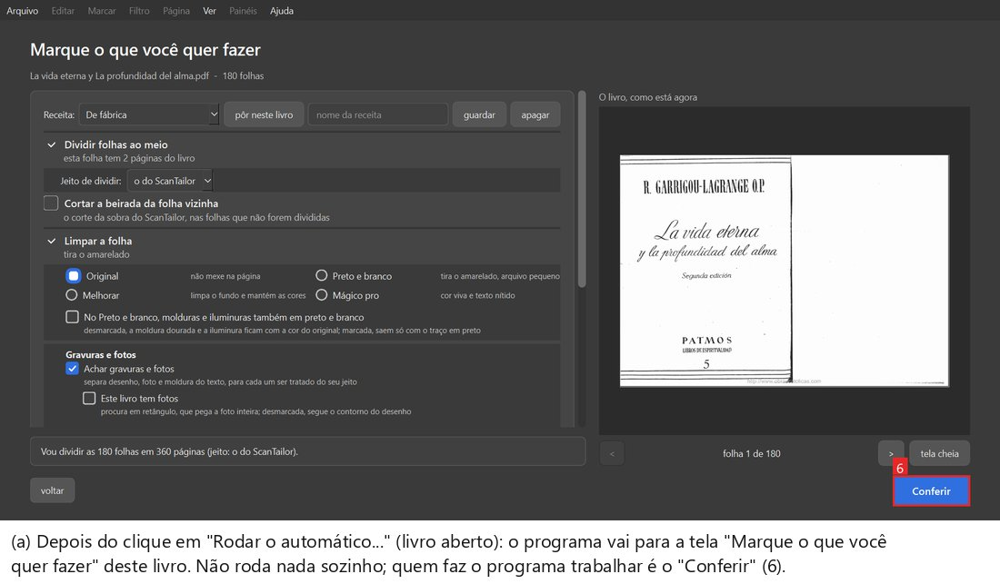
Num livro que já passou pelo "Conferir", voltar às opções (Arquivo > "Voltar para as opções" ou "Rodar o automático..."), marcar mais caixinhas (ex.: Endireitar e Cortar) e clicar "Conferir" não muda nada: a frase de baixo diz que vai endireitar e cortar, mas a tela de conferir volta igual, sem as ferramentas novas.
Detalhe: defeito registrado em 29/09 na Lista de bugs, ainda aberto. Só muda se o número de páginas mudar. No Righetti (R-3), "Conferir" de novo também não dividiu. Até ser consertado: usar um livro novo ou "começar de novo" no menu do cartão (perde o que já foi conferido). Contei como "trava" porque é o único caminho na tela para acrescentar o cortar ou o dividir que faltou.

A Luz ("Igualar a luz da página", "Suavizar as letras", "Tirar o chuvisco") fica em painel "Filtro da página" > "Mais ajustes" e só existe com Preto e branco, Melhorar ou Mágico pro — no Original (o de fábrica) não aparece. A "Área" fica no fim do painel Propriedades, só com ferramenta de marcar, e precisa rolar.
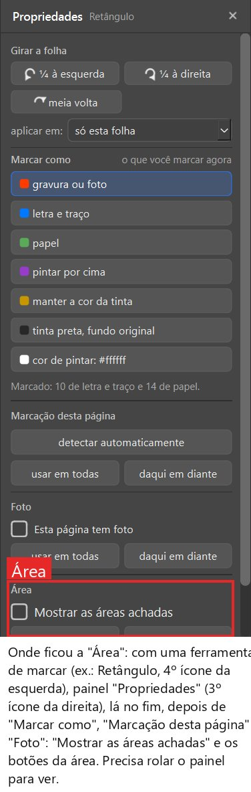
As caixinhas não cabem na tela: "Margens iguais em todas as páginas" e "Montar cadernos" só aparecem rolando. No ljs47 (L-3) faltou justamente a "Margens iguais" (ver 4.8).
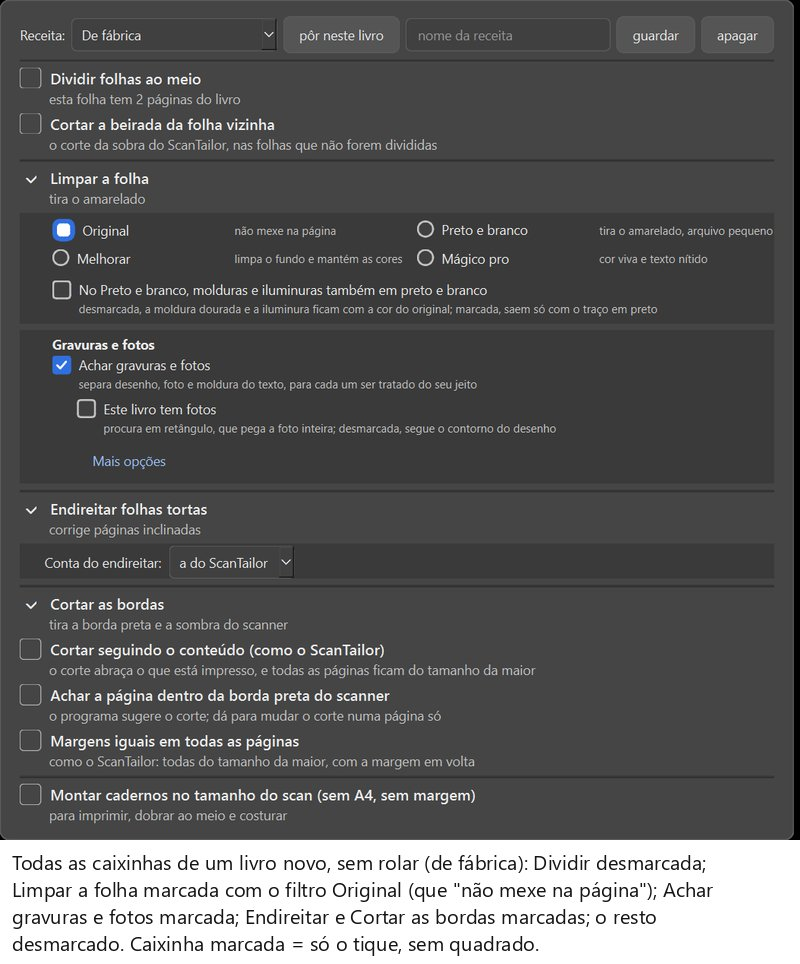
| Nº | Problema | Gravidade | Quem achou | Onde aparece |
|---|---|---|---|---|
| 3.1 | Não dá para girar o livro antes de dividir: livro escaneado de lado não divide | trava o trabalho | livros: R-1, R-2, R-3, R-4 (problema 1) | R, todas as 135 folhas |
| 3.2 | Girar a página vendo-a inteira, como no Photoshop | atrapalha | Samuel 0-10 | La vida eterna p. 55, Endireitar a 45° |
O Righetti está escaneado de lado (livro aberto, duas páginas por folha). A tela das caixinhas não tem como girar o livro. Marquei "Dividir" e a frase prometeu "135 folhas em 270 páginas" — saíram 135. Girando as folhas depois, na conferência, o "dividir esta" fica cinza em todas. Voltar às opções e "Conferir" de novo também não divide. Não há caminho na janela: o livro saiu com as duas páginas juntas.
Detalhe: a conta de dividir não acha a lombada com o livro de lado; depois do "Conferir" cada folha "entrou como uma página só... aqui não dá para dividi-la".

"Quando eu vou girando a folha era para ela aparecer como no Photoshop, para fora do quadrado, mas ela corta." No Endireitar, girando a página, a imagem fica presa dentro do retângulo da página e os cantos somem.
Detalhe: a investigar se é só a tela ou se o PDF também perde os cantos.
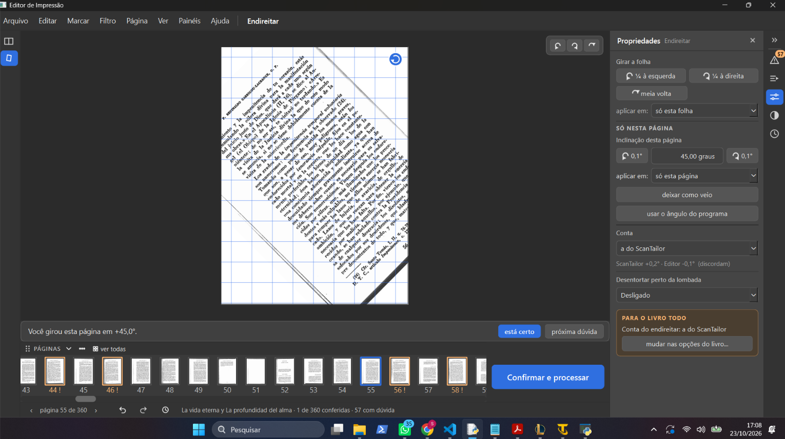
| Nº | Problema | Gravidade | Quem achou | Onde aparece |
|---|---|---|---|---|
| 4.1 | Gravura estragada no Preto e branco, mesmo com "Achar gravuras" | atrapalha | livros: P-1, V-1, S-2 (problema 5) | P 74; V 41; S 110 |
| 4.2 | Texto comido | atrapalha | livros: M-1, M-2, C-1 (problema 6) | M 66, 92, 40, 118; C 3 |
| 4.3 | Folha branca sai cinza e manchada no Preto e branco | atrapalha | livros: B-2, MA-1, S-1 (problema 7) | B 49; MA 2; S 74 e 86 |
| 4.4 | O corte tirou um lado da moldura | atrapalha | livros: H-2 (problema 9) | H 18 |
| 4.5 | PDF pronto gigante | atrapalha | livros: PE-2, L-1, E-3, H-1, G-1, A-3 (problema 3) · mapa nº 22 | PE 208 MB; L 707 MB; E 907 MB; H 1.186 MB; G 1.040 MB; A 1.590 MB; La vida eterna 287 MB |
| 4.6 | A marca do Retângulo que o desfazer não tirou sai impressa | atrapalha | livros: A-1, P-1 (problema 2) | A 56; P 74 |
| 4.7 | Retângulos brancos por cima do cartão das pranchas | atrapalha | livros: PE-1 (problema 12) | PE 51, 59, 67, 75 |
| 4.8 | Corte "até o que está impresso": cada página de um tamanho, sem margem | atrapalha | livros: L-3, G-3 (problema 17) | L 2, 11, 52; G (todas do trecho) |
| 4.9 | Montar em A4 um livro deitado vira as páginas de lado | atrapalha | livros: S-3 (problema 16) | S (o livro todo) |
| 4.10 | A sombra da lombada fica como faixa preta na beirada | atrapalha | livros: B-6, S-1 (problemas 7 e 18) | B 2; S 74 e 86 |
| 4.11 | Mancha pequena vira ponto preto em cima da palavra | detalhe | livros: V-2 (problema 18) | V 203 |
| 4.12 | Pontinhos laranja na margem | detalhe | livros: A-5 (problema 18) | A 56 |
A gravura sai pior que o original. No Palatino 74 (gravura em madeira, letras brancas em fundo escuro) o fundo virou chuvisco preto e branco com manchas pretas grandes; no Valadés 41 (gravura em metal) o traço fino virou áreas pretas chapadas e os rostos perderam detalhe; no Siebmacher 110, parte do risco de bordado virou mancha preta e parte sumiu.
Detalhe: aconteceu com "Achar gravuras e fotos" ligada; no Palatino o programa marcou a página como gravura e ela saiu estragada mesmo assim. Nenhum aviso apareceu (ver 5.7).

Partes do texto somem no PDF pronto. Matemática 66 (e 92): cada número de questão com sombreado cinza virou borrão preto. Matemática 40 (e 118): as primeiras letras de cada linha, perto da lombada, sumiram ("Suponha que" → "~cha que"). Cursus 3: o corte da esquerda comeu a primeira letra ou duas das linhas de baixo.
Detalhe: nenhuma dessas páginas teve aviso de "texto sumiu".
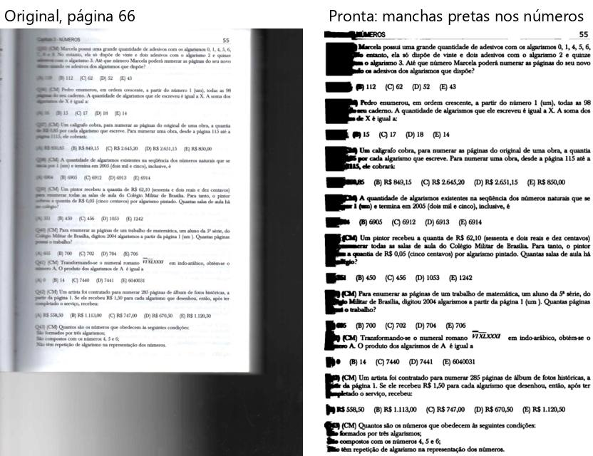
Uma folha de guarda branca sai cinza e toda manchada: a textura e as rugas do papel viram desenho (Boécio 49, Marial 2). No Siebmacher 74 e 86, borrões pretos espalhados. Quem imprime gasta tinta numa página feia.

Livro de Horas 18 (calendário com moldura dourada): o corte tirou o lado esquerdo da moldura e deixou sobra branca do lado direito; a página ficou torta no papel.

Com Mágico pro e Melhorar o PDF sai de 15 a 20 vezes maior que o original: Pesel 208 MB (92 páginas), ljs47 707 MB, Escola 907 MB, Livro de Horas 1.186 MB (100 páginas), Graduale 1.040 MB (101 páginas), Antiphon 1.590 MB (120 páginas). O Graduale inteiro passaria de 7 GB. Difícil de guardar, copiar e mandar para a gráfica.
Detalhe: no Preto e branco ficam leves (livros). O mapa achou 287,4 MB para 360 páginas com o filtro Original (La vida eterna).
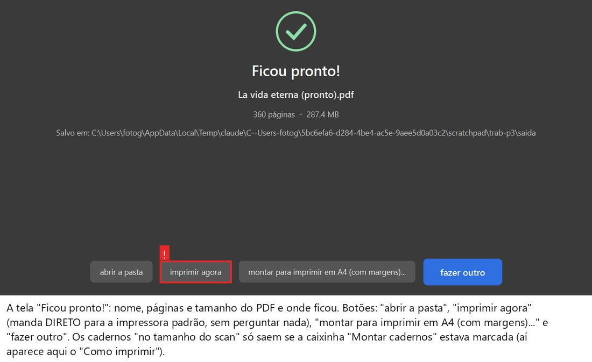
A marcação que o desfazer não tirou (1.3) vai para o PDF. No Antiphon 56 ficou um retângulo cinza atrás de duas linhas de texto, exatamente onde marquei. No Palatino 74 o bloco preto entre o D e o G também está onde marquei.
Detalhe: mesma causa do 1.3; está aqui também porque é o que aparece na página impressa.

O bordado ficou bom, mas o cartão marrom em volta virou um remendo: o título e cada bloco de texto ganharam um retângulo branco por cima, com a letra engrossada, e sobrou uma tira branca torta na beirada esquerda (Mágico pro).

Com o corte "até o que está impresso", cada página sai de um tamanho e sem margem: no ljs47 a página 2 virou uma tira de 21 × 11 cm, a 11 tem 25 × 34 cm, a 52 tem 22 × 36 cm; no Graduale as pautas encostam na beirada. No A4, a letra muda de tamanho de página para página. Nada avisa; a caixinha "Margens iguais" fica escondida (2.7).
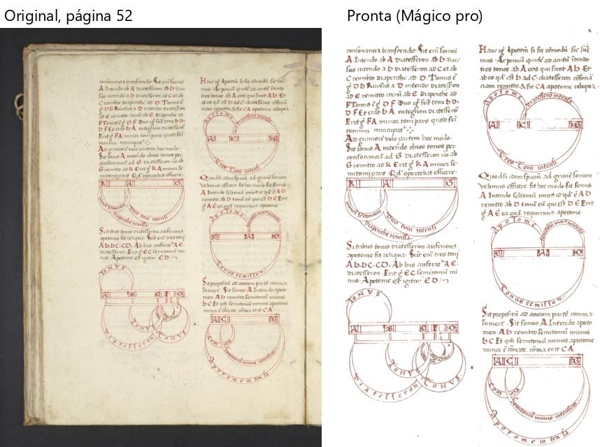
No Siebmacher (livro mais largo que alto), "montar para imprimir em A4" com o Livreto de fábrica põe todas as páginas de lado e diminuídas na meia folha (lê-se girando 90°), e a caixa de avisos lista mais de 120 linhas iguais "Página N: era deitada e foi girada de pé e diminuída para caber na página". O programa não sugere outro jeito.

A sombra da lombada não é cortada: no Boécio 2 ficou um risco preto fino em toda a beirada esquerda; no Siebmacher 74 e 86, uma faixa preta grossa, mesmo com "Achar a página dentro da borda preta" marcada.
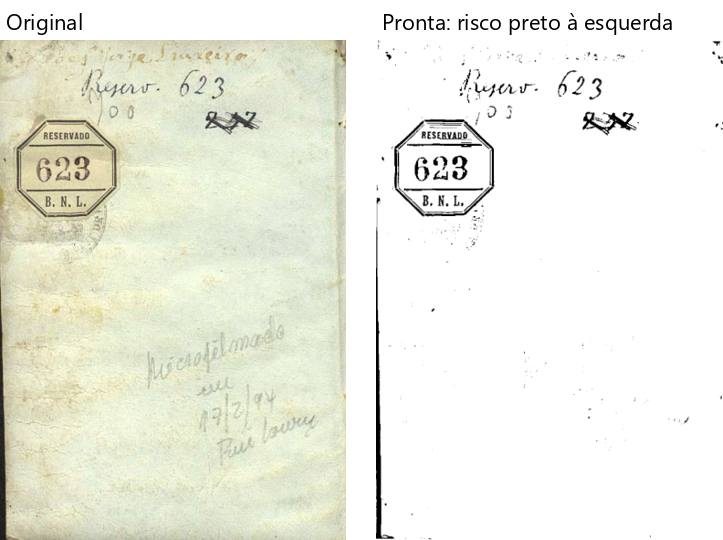
Valadés 203: uma mancha marrom pequena em cima de uma palavra virou um ponto preto em cima de "Idiomate". Print: não há.
Antiphon 56: sobraram pontinhos laranja das manchas do pergaminho na margem da direita. Print: o mesmo do 4.6.
| Nº | Problema | Gravidade | Quem achou | Onde aparece |
|---|---|---|---|---|
| 5.1 | SEGURANÇA: "imprimir agora" manda o livro inteiro para a impressora sem perguntar | trava o trabalho (segurança) | mapa nº 15 · sessão 0 (Respostas do mapa) | tela "Ficou pronto!" |
| 5.2 | A fila "Receita" no topo, sem explicação | atrapalha | Samuel 0-1 · mapa nº 5 e parte 5 | "Marque o que você quer fazer"; Configurações > Medidas e receitas |
| 5.3 | Caixinha cinza e marcada ("Escurecer sozinho a força do preto...") | atrapalha | Samuel 0-2 · mapa nº 6 | "Marque o que você quer fazer", com Preto e branco |
| 5.4 | Folha e página misturadas | atrapalha | mapa nº 8 e 10 · Samuel 0-3 (rodapé) | livro aberto; tela de conferir (Dividir x outras ferramentas) |
| 5.5 | Três contagens de dúvidas diferentes, e os avisos de folha escondidos | atrapalha | mapa nº 9 · livros: E-1, H-5, C-2, R-7 (problema 4) e "Já conhecido" de B, P, S, PE | todos: ex. E rodapé 1 / fim 166; R 206 / 71 / 135 |
| 5.6 | O número de dúvidas muda sozinho ao folhear | atrapalha | livros: B-3, L-4, MA-2, G-5, A-6 (problema 14) | B 17 → 15; L 44 → 57; MA 47 → 57; G 19 → 30; A 66 → 75 |
| 5.7 | Avisos demais e avisos falsos | atrapalha | livros: B-5, P-4, S-4, M-3, R-8, V-4, A-6 (problema 13) | S 128 de 134; M 126 de 144; V 201 de 446; P 4 (3 avisos numa folha branca) |
| 5.8 | Nomes "ScanTailor", "Editor" e "contas" na tela e nos avisos | atrapalha | mapa nº 20 · livros: B-5, R-8 | "Marque o que você quer fazer"; avisos em B (9 de 50), R (69 de 135), V, A, PE |
| 5.9 | O aviso fala de "força do preto" em página Mágico pro ou Melhorar | atrapalha | livros: PE-4, E-2, H-3 (problema 10) | PE 51; E 1; H 4 |
| 5.10 | Atalhos em inglês e a lista atrás de "Show Details..." | atrapalha | mapa nº 17 · sessão 0 (Respostas do mapa) | Ajuda (F1); menus ("Ctrl+Return", "Ctrl+Left", "Ctrl+Right") |
| 5.11 | "Limpar a folha" vem marcada com o Original, que não limpa nada | atrapalha | mapa nº 4 | "Marque o que você quer fazer" |
| 5.12 | Dois "montar cadernos" com nomes parecidos | detalhe | mapa nº 16 | caixinhas e "Ficou pronto!" |
| 5.13 | "Os quatro filtros" (esquerda) e "Filtro da página" (direita) com o mesmo desenho | detalhe | mapa nº 12 | tela de conferir |
| 5.14 | Nomes da Luz cortados ("Igual", "Suav", "Tirar o ch") | detalhe | mapa nº 18 | painel "Filtro da página" > "Mais ajustes" |
| 5.15 | Nome do PDF sugerido com acento ("mágico pro") | detalhe | livros: A-4 (problema 18) | A, PE, L, E, G |
| 5.16 | Nome comprido do livro cortado no cartão | detalhe | mapa (parte 1) | tela inicial |
Na tela "Ficou pronto!", o botão "imprimir agora" manda o PDF direto para a impressora padrão do Windows, sem janela de impressão: não escolhe impressora nem número de cópias e não pergunta "tem certeza?". O livro inteiro sai com um clique (no La vida eterna, 360 páginas).
Detalhe: o mapa não testou o botão, de propósito; a descrição vem do que o botão faz no programa. Fica ao lado de "montar para imprimir em A4", fácil de clicar por engano.
"Receita automática está muito confuso, esse painel." A fila "Receita" (com "De fábrica", "pôr neste livro", "nome da receita", "guardar", "apagar") fica no topo da tela das caixinhas, antes de tudo, e não explica o que é.
Detalhe: só guarda e repõe as caixinhas desta tela com um nome, como os perfis do ScanTailor; nada nela é automático
(ui/tela_opcoes.py:197-223, core/perfis.py, item 2.19; o código já diz "provisório até o layout"). A mesma coisa
aparece de novo nas Configurações ("Receita de todo livro novo").

"Essa opção não dá para desativar": "Escurecer sozinho a força do preto quando o texto sair falhado" aparece marcada e cinza — parece ligada e travada.
Detalhe: só vale com "Só as letras" ligado; sem ele fica cinza mas continua marcada (vem marcada de fábrica)
(ui/tela_opcoes.py:544-553, :1039-1040).
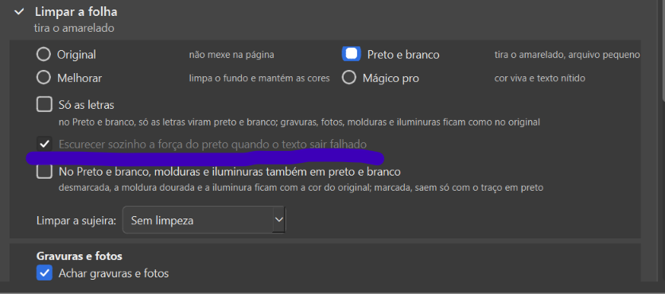
O livro aberto diz "360 páginas" em cima e "página 1 de 180" embaixo. Na conferência, no Dividir as miniaturas são "FOLHAS" ("folha 1 de 180"); nas outras ferramentas viram "PÁGINAS" ("página 1 de 360"); o "Para revisar" fala sempre em página. O rodapé conta páginas (360) enquanto o Dividir confere folhas (180): "está certo" e a barra de espaço no Dividir não mudam "0 de 360 conferidas" (1.1).
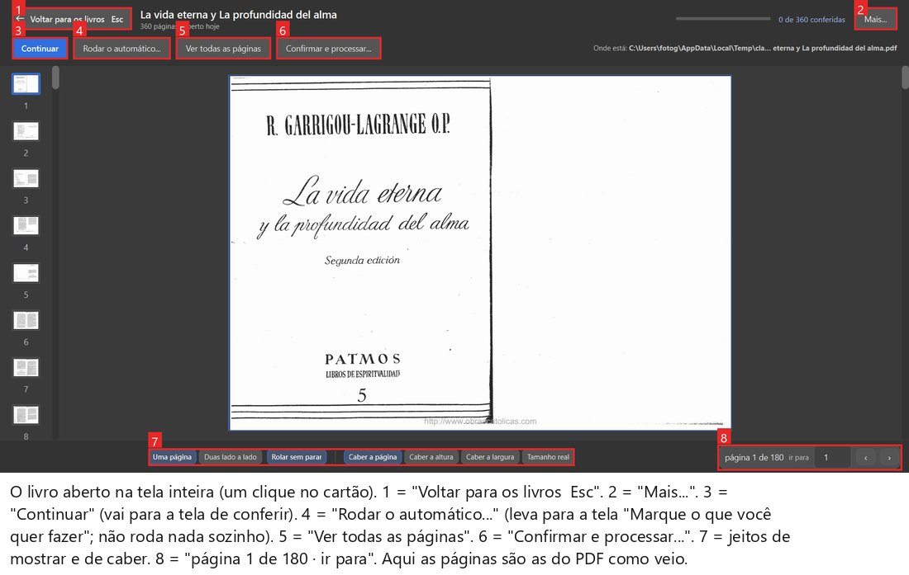
Cada lugar dá um número de dúvidas diferente. No La vida eterna: rodapé e "Para revisar" 56, a janela "Antes de processar" 67 páginas (69 avisos), o "Ver todas as páginas" do livro aberto (0). Na Escola o rodapé dizia "1 com dúvida", o painel 2, e no fim a janela cobrou 166 páginas. No Righetti: alto 206, rodapé 71, fim 135 páginas / 225 avisos.
Detalhe (explicação dos livros): o rodapé e o "Para revisar" não mostram os avisos de folha ("Alinhamento duvidoso"); só o número do alto ("N páginas para você olhar") e a janela do fim contam esses. O Kaique acha que está tudo conferido e é surpreendido no fim.
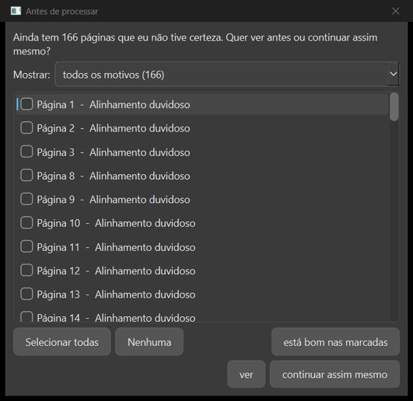
Só folheando, sem resolver nada, o número de dúvidas muda: Boécio 17 → 15, ljs47 44 → 57, Marial 47 → 57, Graduale 19 → 30, Antiphon 66 → 75. Print: não há.
Há aviso em quase todas as páginas: de 126 a 201 páginas com dúvida (Siebmacher 128 de 134; Matemática 126 de 144; Valadés 201 de 446). "Esta página tem cor - o preto e branco vai perder a ilustração" em 72 páginas de papel marrom (Siebmacher) e em quase todo o livro de fotos de celular (Matemática). No Palatino 4, uma folha branca com três avisos. "Inclinações diferentes" em folhas sem texto (capas, guardas). Com tanto aviso, os defeitos reais (4.1, 4.2, 4.3) passam sem aviso nenhum. Print: não há.
Nomes que não dizem nada ao Kaique: "Jeito de dividir: o do ScanTailor / o do Editor", "Conta do endireitar: a do ScanTailor", "Cortar seguindo o conteúdo (como o ScanTailor)". E o aviso "A conta do ScanTailor e a do Editor acharam inclinações diferentes" (ou "as contas discordam") aparece em 9 das 50 páginas do Boécio e em 69 das 135 folhas do Righetti, inclusive em folhas sem texto.
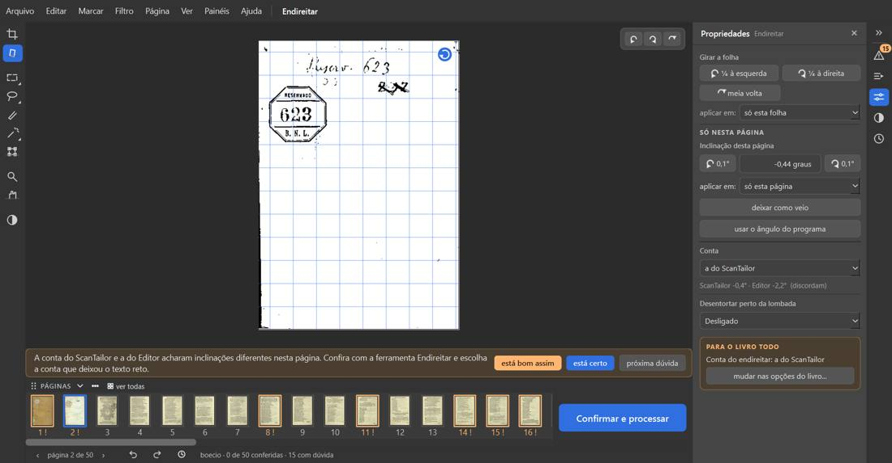
O aviso "Ficou muito escura. Tente mais fraco na força do preto" aparece em páginas Mágico pro e Melhorar, onde esse controle não existe (no Mágico pro ele se chama "Intensidade"). O Kaique vai procurar um controle que não está ali. O botão do mesmo aviso não faz nada (1.2). Print: não há.
A "Ajuda" (F1) mostra só "O que dá para fazer, e por qual tecla:"; a lista fica atrás de um botão em inglês, "Show Details...". Nos menus, atalhos escritos "Ctrl+Return", "Ctrl+Left", "Ctrl+Right".

"Limpar a folha" vem marcada, com o subtítulo "tira o amarelado", mas com o filtro Original ("não mexe na página"): de fábrica não tira nada. A frase de baixo nem menciona a limpeza.

A caixinha "Montar cadernos no tamanho do scan (sem A4, sem margem)" (antes) e o botão "montar para imprimir em A4 (com margens)..." (depois) têm nomes parecidos; a "Ficou pronto!" não diz qual usar.
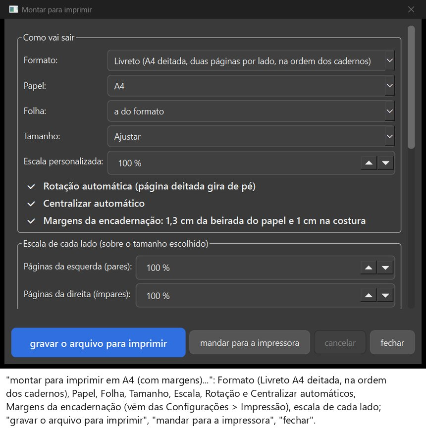
"Os quatro filtros" (ícone da esquerda, meia lua) e o painel "Filtro da página" (direita) têm o mesmo desenho e fazem quase a mesma coisa.

No painel, os nomes aparecem cortados: "Igual", "Suav", "Tirar o ch".
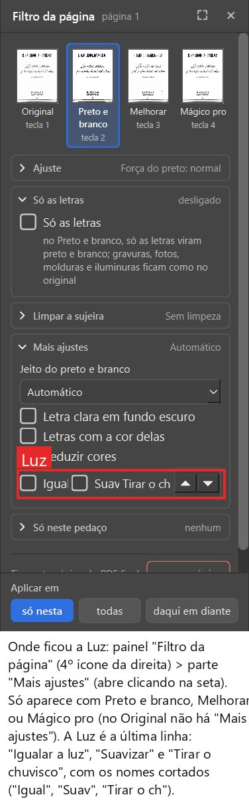
Nome sugerido "antiphon-trecho - mágico pro.pdf"; o mesmo "mágico pro" com acento no Pesel, ljs47, Escola e Graduale.
A regra do projeto é caminho de disco sem acento (CLAUDE.md §3). Print: não há.
O nome comprido aparece cortado no cartão da tela inicial ("La vida eterna y La profu...").
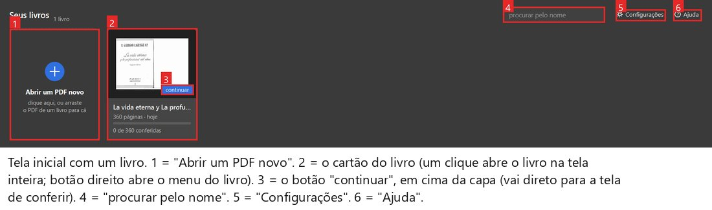
CLAUDE.md §9;
muito forte no Cursus 37 e 402, também B 10 e 23, MA 166, G 1); o Boécio tem resolução baixa (§9); o endereço do site
no pé de todas as páginas da Escola (R8: "apagar em todas as páginas um texto repetido" — ainda não existe).relatorios/testes-guiados/lista-unica-2026-10-23/lista.md (e .html; o .pdf fica fora do git, com
uma cópia em D:\programas\EditorImpressao-arquivos\testes-guiados-lista-unica\).prints/ nesta pasta, com o nome de onde vieram (samuel-, mapa-, livros-<livro>-).Editor de Impressão · gerado em 23/10/2026 às 23:58